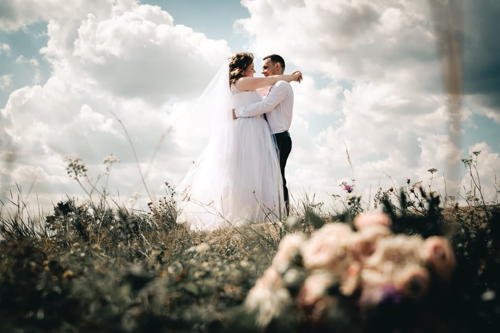
Тёплый свет и живые люди
Александр Шихалев, Киров
Снимаю в Кирове и выезжаю за город, если история этого просит. Чаще всего это свадебный день целиком, короткая love story на прогулке, портрет для себя или для работы, репортаж на празднике и серия кадров для соцсетей.
Работаю с естественным светом и без жёстких постановок. Не прошу замереть и улыбнуться, а жду настоящее: смех, взгляд, случайное движение. Люблю закат и контровой свет, поэтому съёмку стараюсь ставить на вечерние часы.
Избранное
Работы
Кадры с разных съёмок: свадьбы, love story и город на закате. По ним видно, как я работаю со светом и в какой момент нажимаю кнопку.

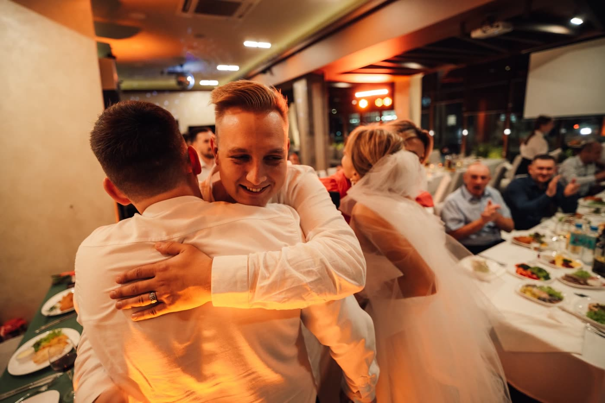
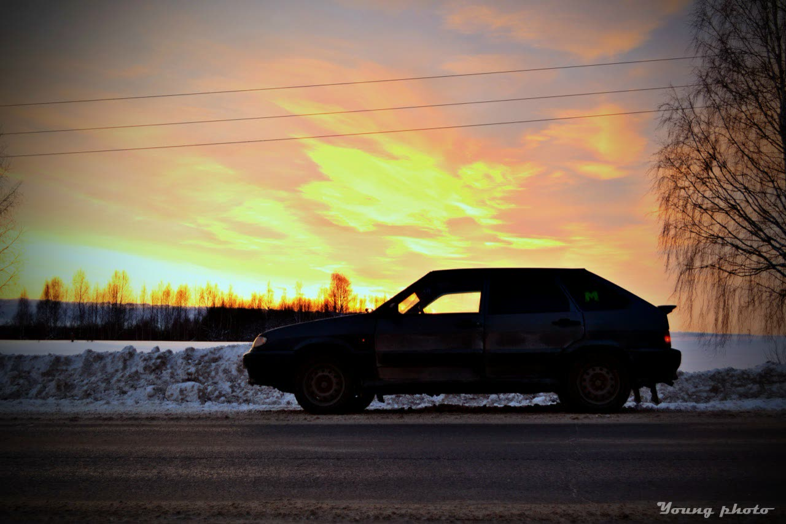
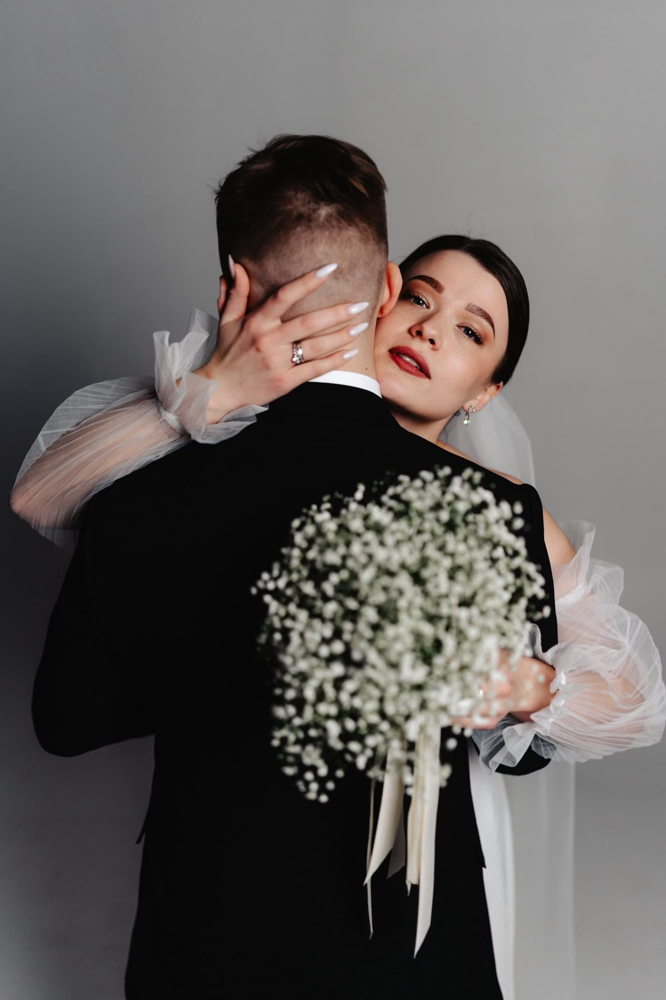
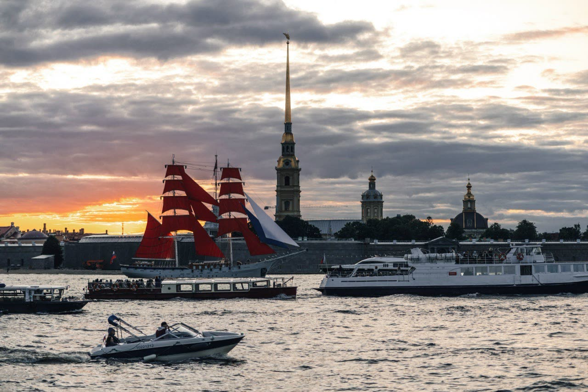
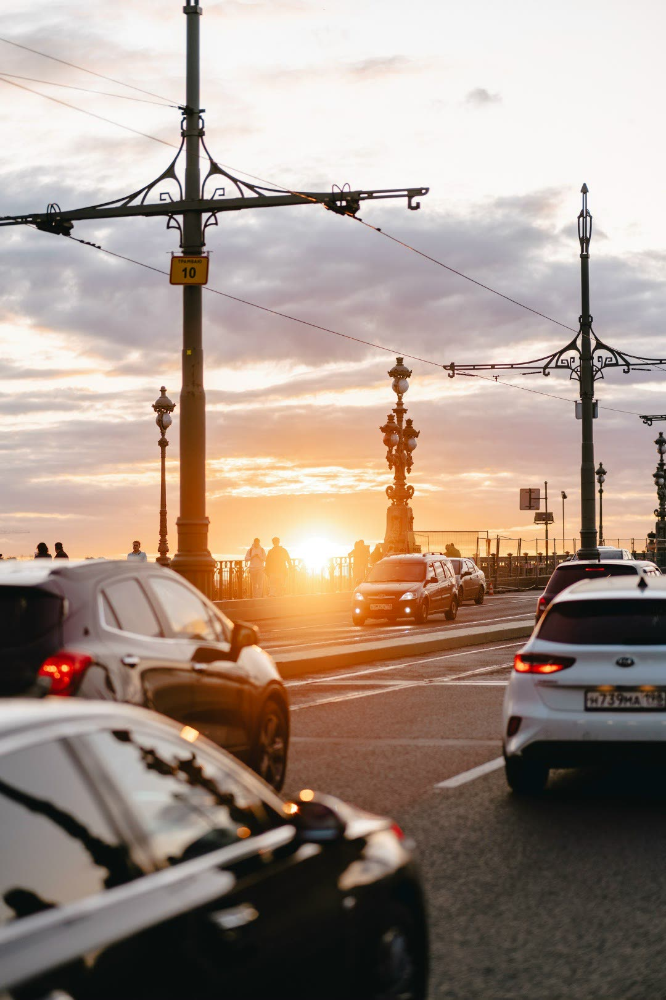
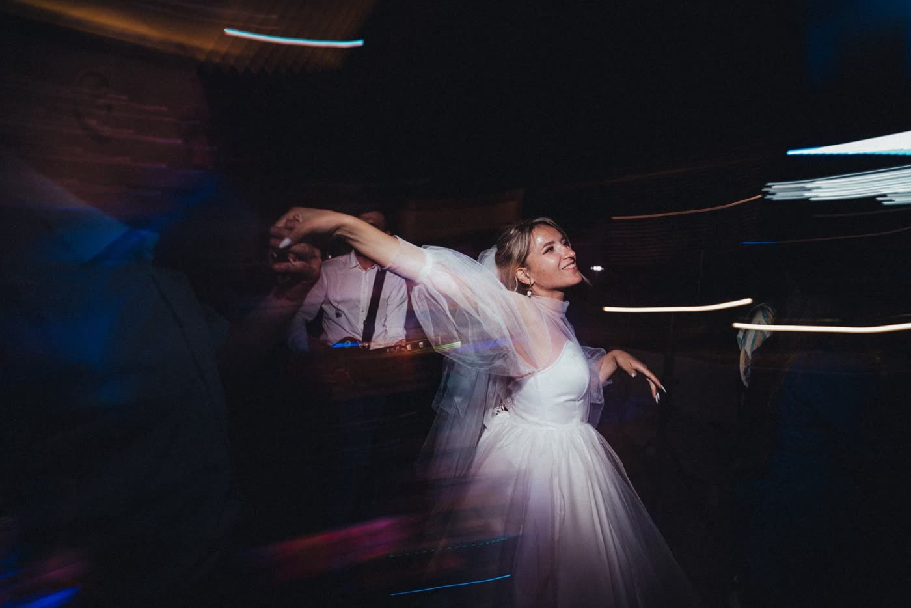
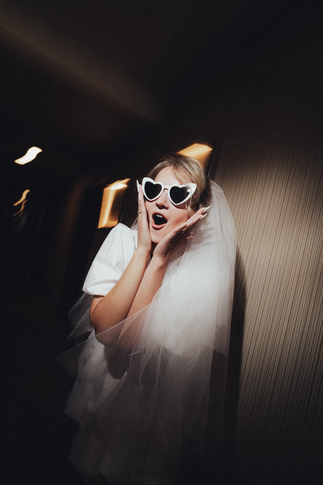
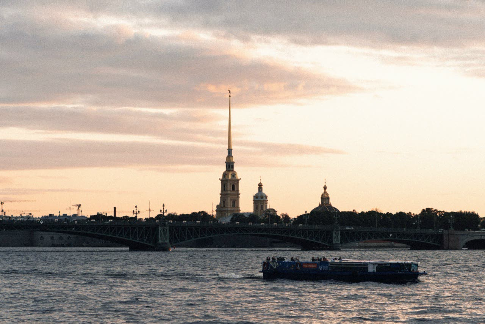
Что снимаю
Услуги
Четыре формата съёмки. Что входит в конкретный день, сколько это займёт и сколько стоит, обсуждаем в переписке под вашу задачу.
Свадьбы и love story
Сборы, церемония, прогулка и вечер. Снимаю день целиком или его часть: эмоции гостей, детали, первый танец. Love story - отдельная короткая съёмка на прогулке, чаще всего на закате.
Портреты
Личные и деловые. Снимаю на улице или в интерьере, без скованных поз: сначала разговариваем, потом ловлю вас настоящего. Подходит для соцсетей, резюме и просто для себя.
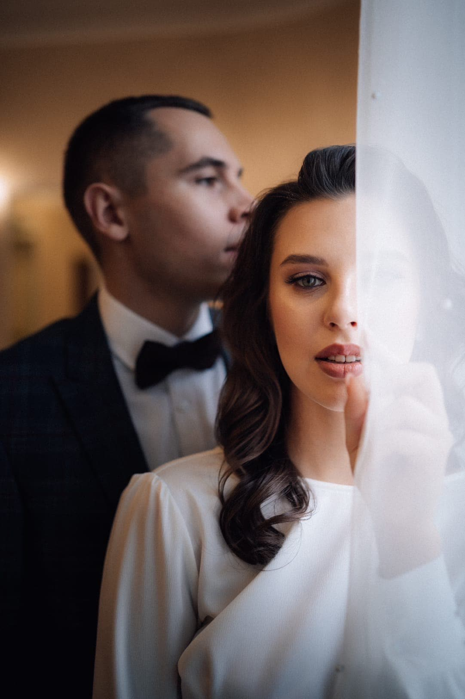
Репортаж
Праздники, мероприятия, городские события. Работаю незаметно и снимаю то, что происходит само: реакции людей, разговоры, атмосферу площадки. Без построений и командного «а теперь все сюда».
Контент-съёмка
Фото для соцсетей, сайта и рекламы. Собираем серию кадров в одном настроении: человек, продукт, атмосфера места. На выходе набор, из которого удобно публиковать неделями.
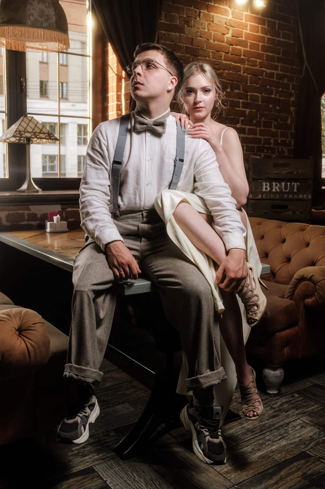
Не нашли свой формат? Напишите, что именно нужно снять, и я скажу, берусь ли и как это лучше сделать.
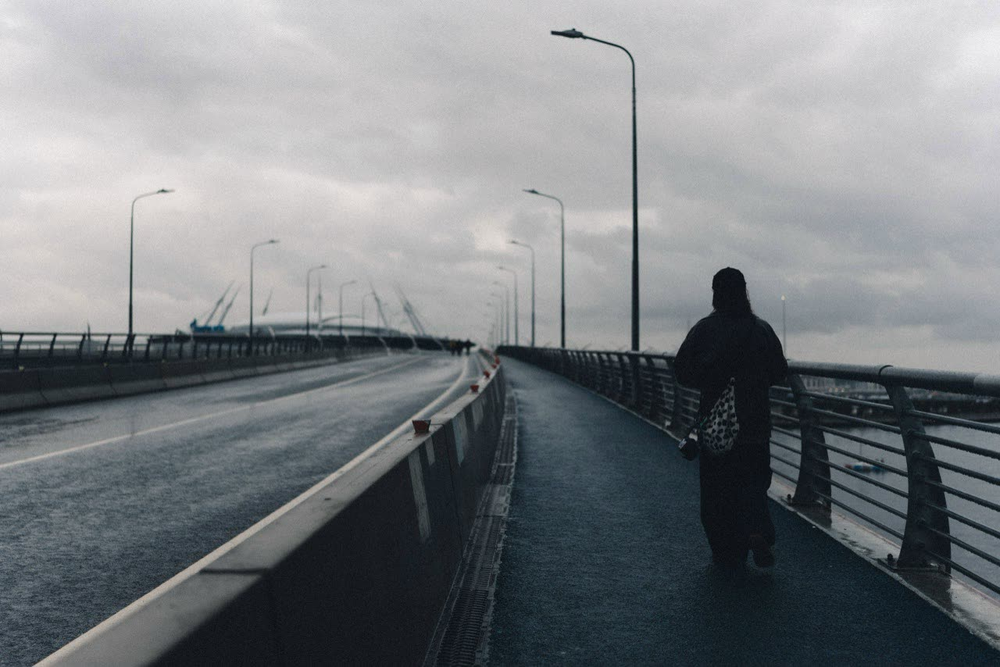
Закат длится минут двадцать. За это время обычный вечер успевает стать тем, к чему вы будете возвращаться годами.
Связаться
Давайте снимем вашу историю
Напишите в VK: расскажите, что за событие, какая дата и где. Отвечу, свободен ли этот день, и предложу, как лучше выстроить съёмку.
+7 900 000-00-00Никаких форм - просто напишите или позвоните.